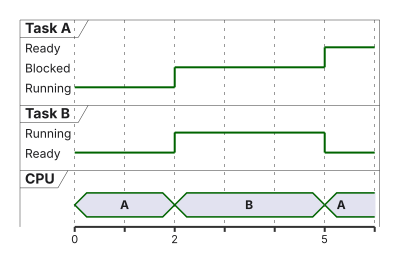
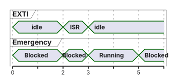

%%{init: {'theme': 'base', 'themeVariables': {'background': '#FFFFFF', 'primaryColor': '#FFFFFF', 'primaryBorderColor': '#E5E5EA', 'primaryTextColor': '#1D1D1F', 'lineColor': '#86868B', 'secondaryColor': '#F5F5F7', 'tertiaryColor': '#FFFFFF', 'mainBkg': '#FFFFFF', 'nodeBorder': '#E5E5EA', 'clusterBkg': '#F5F5F7', 'clusterBorder': '#E5E5EA', 'titleColor': '#1D1D1F', 'edgeLabelBackground': '#FFFFFF'}}}%%
flowchart TB
APP[Anwendungsthreads] --> CMSIS[CMSIS-RTOS2]
CMSIS --> K[FreeRTOS-Kernel]
K --> P[CM4F-Port]
P --> M4[Cortex-M4]
HAL[HAL / Peripherie] --- M4
M7[CM7: Start laut Projekt] --- BUS[gemeinsame Busse / SRAM]
M4 --- BUS
style K fill:#FFFFFF,stroke:#E2001A,stroke-width:2px !important
03 · Einführung in Echtzeitbetriebssysteme
FreeRTOS und Task-Management · EZS · DHBW Stuttgart
Prof. Dr.-Ing. Daniel Klünder
Willkommen in der Profiliga!
- Dritter Termin: vom Dispatcher der Vorlesung 2 zu einem Kernel
- Heute: ein FreeRTOS auf dem Cortex-M4 des STM32H755
- Der CM7 übernimmt die im Projekt dokumentierte Startfunktion, keinen zweiten Scheduler
- Ein RTOS strukturiert Tasks; Fristen bleiben nachzuweisen
Agenda für heute
- Recap: Dispatcher, nicht der rekursive Eigenbau
- Was ein Kernel leistet — und was nicht
- Kontext, RAM, Zustände, Prioritäten
- Ticks, Delays, CMSIS-RTOS2
- Labor: Heartbeat, HeavyMath, Emergency
Recap: Unser Round-Robin Eigenbau
VL2-Zielbild: zentraler Dispatcher, endliche step()-Funktionen, Zustand im TCB.

- Ein Step, der nicht zurückkehrt, blockiert weitere kooperative Schritte
- Aktive Interrupts können weiterlaufen
- Ein normaler Funktionsaufruf sichert keine Fortsetzung mitten in einer Endlosschleife
Recap: Der Crash im Labor
- Kooperativ: Heavy-Schritt ohne
return— Heartbeat-Callback kommt nicht dran - Präemptiv, analog: High bleibt dauerhaft Ready — Low verhungert trotzdem
- Präemption löst das erste Problem und kann das zweite erzeugen
- Harte Fristen brauchen Grenzen der Arbeit, nicht nur einen Kernel
Die Notwendigkeit eines echten RTOS
- Viele Aufgaben, Fristen und Wartepunkte werden sonst zur Flag-Suppe
- Der Kernel bietet Scheduling, Objektallokation, Kommunikation, Synchronisation, Port
- Mutex ist keine allgemeine ISR-Lösung; aus der ISR nur dafür vorgesehene Übergaben
- Zertifizierung und Speicherschutz entstehen nicht durch „FreeRTOS einschalten“
Was leistet ein RTOS?
| Baustein | Rolle |
|---|---|
tasks.c |
Zustände, Ready-Listen, Delays |
list.c |
Listen für diese Objekte |
queue.c |
Queues (später) |
heap_x.c |
eine mögliche Allokation |
| CM4F-Port | C und Assembler: PendSV, SVC, Tick |
- Plattformunabhängig ist die API-Idee, nicht Prioritätszahl, Takt oder Treiber
Der Markt für Echtzeitbetriebssysteme
- Kommerziell u. a. VxWorks, QNX; im Auto oft AUTOSAR-OS
- Offen u. a. Zephyr und FreeRTOS
- „Marktführer“ oder „safety-zertifiziert“ nur mit benannter Quelle und Konfiguration
- Wir nutzen FreeRTOS, weil Cube es für den STM32 anbindet — nicht als Beweis einer Frist
Lernziele des heutigen Tages
- Dispatcher-Callback und RTOS-Thread unterscheiden
- Stack, TCB und übriges RAM grob bilanzieren
- Ready, Running und Blocked an einer CPU-Spur erklären
- Tickphase,
osDelayundosDelayUntilauseinanderhalten - Emergency per Thread-Flag aus einer erlaubten ISR wecken
Architektur: Bare-Metal vs. RTOS
- Ein Kernel auf dem CM4; Tasklisten wandern nicht zum M7
- Zwei Kernel später wären eine eigene AMP-Entscheidung
- Ohne MPU-Port isoliert der Stack nur organisatorisch
Das Kernparadigma: Latenz vs. Determinismus
Synthetische Antwortzeiten, Deadline \(D = 10\,\mathrm{ms}\):
- Folge \(2/4/6/8\,\mathrm{ms}\): Schwankung, aber kein Miss
- Ein Lauf mit \(R = 12\,\mathrm{ms}\): Miss
- Hohe Priorität ist keine Obergrenze
- Konstante Zusatzlatenz ist kein Jitter
Bestandteile von \(R\), ohne hier die RTA zu wiederholen: eigener CPU-Bedarf, höherpriore Arbeit, IRQs, Blocking, Dispatcher.
Visualisierung: Jitter-Vergleich

- Die Skizze zeigt einen gehaltenen Job mit \(R = 8\,\mathrm{ms}\)
- Eine Bare-Metal-ISR kann dieselbe Frist mit weniger Dispatcheranteil halten
- Der Vergleich ist nicht „Super-Loop schlecht, RTOS gut“
Einführung in FreeRTOS
- Richard Barry, später Amazon/AWS; Lizenz MIT
- Portierbar, deshalb der STM32-Cube-Standard in diesem Kurs
- Konkrete ROM-/RAM-Größe: Linker-Map der verwendeten
FreeRTOSConfig.h - Version von Kernel, CMSIS-Wrapper und CubeH7 am Projekt ablesen
Die FreeRTOS Architektur
- Anwendung → CMSIS-RTOS2 → Kernel → Port → Cortex-M4
tasks.c,list.c,queue.c,heap_4.co. ä. nach Rolle- PendSV/SVC im Port; SysTick ist eine übliche Tickquelle, keine Pflicht
- CMSIS macht nicht jeden Backendwechsel ohne Anpassungen möglich
Zusammenfassung: Warum ein RTOS?
- Struktur: Threads statt einer Flag-Suppe
- Kosten: Ticks, Wechsel, Stacks, Fehlersuche
- Keine automatische Pünktlichkeit und kein automatischer Speicherschutz
- Präemption ersetzt kooperative Rückkehrpflicht, nicht die Analyse
Das FreeRTOS Task-Modell
- Native Task-Funktion kehrt nicht normal zurück
- Ende über
vTaskDelete(NULL); CMSIS:osThreadExit() - Ein bloßes
returnführt portabhängig oft in eine Assert- oder Fehlerschleife, nicht zwingend in den HardFault - Labor-Threads:
for (;;)und RTOS-Warten
Der Task Control Block (TCB) in FreeRTOS
pxTopOfStack: Oberkante des gesicherten Kontexts- Listenelemente: Ready, Delayed, …
uxPriority: nativUBaseType_t, nicht pauschaluint8_t- CMSIS sieht
osPriority_t; der Wrapper bildet ab und kann Werte ablehnen
Speichermanagement: Der Stack
- Lokale Variablen und Aufrufe liegen auf dem Task-Stack
- Hardware-Frame: R0–R3, R12, LR, PC, xPSR; Software zusätzlich R4–R11, portabhängig FPU
- 128 Einträge
StackType_t× 4 Byte = 512 Byte - CMSIS
stack_size = 512bedeutet 512 Byte, nicht 512 Wörter - Cube-Feld gegen den generierten Wert prüfen
Berechnung des RAM-Bedarfs
Annahme, ausdrücklich nicht die Map-Datei: TCB ≈ 80 Byte.
| Position | Byte |
|---|---|
| Stack 512 + TCB 80 | 592 |
| Drei Threads 512 / 1024 / 1024 + 3×80 | 2800 |
Dazu, oft andere Pools: Idle, Timer-Task, Queues, Heap-Metadaten, Alignment, MSP.
- Das gesamte H755-SRAM ist kein frei zusammenhängender CM4-Heap
- Dynamische Anlage kann scheitern; statische Reservierung verlagert die Planung nach vorn
Speicherallokation: Statisch vs. Dynamisch
- Dynamisch:
osThreadNewkannNULLliefern - Statisch: Speicher ist vorher da, Stacktiefe bleibt eine Messfrage
- Große Puffer brauchen Eigentümer und Lebensdauer
- Eine globale Variable ist keine automatische Safety-Lösung
- MPU-Isolation nur mit dem dafür gebauten Port und passender Konfiguration
Das FreeRTOS Zustandsmodell

- Suspend ist administrativ, nicht dasselbe wie Warten auf ein Ereignis
- CMSIS
osThreadState_that kein eigenes Suspended; die Abfrage zeigt das oft als Blocked - Blocked: der Task führt keine eigenen Befehle aus; Tick und Wakeup kosten trotzdem Zeit
Der „Running“-Zustand
- Genau ein Thread hat die CPU
- Idle rechnet, wenn niemand sonst Ready ist
HAL_Delayist in der üblichen HAL ein Busy-Wait: Zustand bleibt Running, höherpriore Threads können trotzdem präemptieren- Busy-Wait ist Last, kein automatisches „Echtzeit zerstört“ — im Labor trotzdem
osDelay
Der „Ready“-Zustand
- Will rechnen, wartet auf Zuteilung
- Nach Timeout kann ein höherpriorer Thread nach IRQ-Ende und PendSV sofort laufen
- Ready heißt nicht „noch einen ganzen Tick warten“
- Maskierung oder eine laufende höhere ISR verzögern den Wechsel
Der „Blocked“-Zustand (Die Magie des RTOS)
- Eigene Auslastung des wartenden Threads: keine Instruktionen
- Gesamt-CPU kann durch HeavyMath trotzdem voll sein
osDelay/osThreadFlagsWaitblockieren;HAL_Delaynicht- Aus der ISR kein
osDelayund kein Mutex-Warten
Visualisierung: Task-Zustände im Zeitverlauf
A höher als B. A läuft, ruft Delay, B läuft, A wird Ready und läuft nach zulässigem Wechsel wieder.

- Bei \(t = 5\) rechnet A, nicht „A wartet noch bis \(t = 6\)“
- Kurze PendSV-Zeit im Detail denken, nicht als 1-ms-Balken messen
FreeRTOS Scheduler-Konfiguration
- Höchste nichtleere Ready-Priorität gewinnt
- Suche oder optimierte Bitmap: abhängig von
configUSE_PORT_OPTIMISED_TASK_SELECTION - Deshalb keine universelle Taktzahl für „den“ Scheduler
configMAX_PRIORITIESund der CMSIS-Wrapper gemeinsam prüfen
Prioritäten in FreeRTOS (Achtung: Falle!)
| Skala | Richtung |
|---|---|
| Native FreeRTOS-Task | größere Zahl = dringender |
CMSIS osPriority_t |
ebenso, andere Symbole |
| NVIC, logisch | kleinere Zahl = dringendere IRQ |
Labor-Ordnung: Emergency \(>\) Heartbeat \(>\) HeavyMath \(>\) Idle.
- Konkrete Abbildung steht in der verwendeten
cmsis_os2.c - „Oft 7 Stufen“ nicht mit einem Wrapper mischen, der mehr CMSIS-Stufen erwartet
osThreadYield: hohe Priorität bleibt Ready und wird wieder gewählt
Die Idle-Task (Prio 0)
- Idle hat die niedrigste native Priorität, muss sie aber nicht allein besitzen
- Dauerhaft bereites HeavyMath oberhalb Idle verhindert Idle-Lauf, Cleanup und Idle-Schlaf
- Hooks und das Löschen beendeter Tasks sind konfigurationsabhängig
WFIist kein automatischer Standardpfad jederFreeRTOSConfig.h
Strom sparen: Tickless Idle
- Tickless unterdrückt geeignete Kernel-Ticks
- Der übliche CM4F-Port verlängert SysTick; das ist kein eigener Low-Power-Timer
- LPTIM/RTC brauchen eine passende Portierung
- 24-Bit-Zähler: bei \(100\,\mathrm{MHz}\) etwa \(167{,}8\,\mathrm{ms}\), bei \(240\,\mathrm{MHz}\) etwa \(69{,}9\,\mathrm{ms}\)
- „500 ms mit unverändertem SysTick“ nicht zeichnen
- Ein weiterlaufender HAL-TIM6 kann trotzdem wecken
- Deep Sleep braucht PWR, Clock und beide Kerne — das HeavyMath-Labor ist kein Tickless-Versuch
Der RTOS-Herzschlag: Die Tick-Rate
configTICK_RATE_HZsetzt die Kernel-Tickperiode, nicht die Wanduhr alleinosDelay(1)endet an einer Tickgrenze- Aufruf bei \(0{,}1\,\mathrm{ms}\): Ready bei \(1\,\mathrm{ms}\) (Dauer \(0{,}9\,\mathrm{ms}\))
- Aufruf bei \(0{,}9\,\mathrm{ms}\): Ready bei \(1\,\mathrm{ms}\) (Dauer \(0{,}1\,\mathrm{ms}\))
- Danach kann höherpriore Arbeit den echten Start noch schieben
Zeit-Umrechnung (Die goldene Regel)
Aufrundender Helfer, nicht pdMS_TO_TICKS ungeprüft:
| ms | 1000 Hz | 100 Hz, ceil |
|---|---|---|
| 1 | 1 | 1 |
| 5 | 5 | 1 |
| 100 | 100 | 10 |
| 500 | 500 | 50 |
- Ceil vermeidet 0 Ticks für kleine positive ms, garantiert aber keine Mindest-Wandzeit
pdMS_TO_TICKSrundet je nach Makro ab: 1 ms oder 5 ms bei 100 Hz können 0 seinvTaskDelay(0)yieldet;osDelay(0)ist nicht dieselbe Warte-API
Der Context Switch (Overhead-Analyse)
- Lehrannahme 150–300 Zyklen, kein Messwert
- Bei \(100\,\mathrm{MHz}\): \(1{,}5\)–\(3\,\text{µs}\)
- 200 Zyklen, 500 Wechsel/s, \(100\,\mathrm{MHz}\): \(0{,}1\,\%\) CPU, Tick und ISRs extra
- Hardware-Frame, Software-Register, PSP setzen, EXC_RETURN
- FPU nur wenn der Port den Kontext mitsichert
Wann wechselt der Scheduler?
- Tick, Yield, Blockieren, oder eine ISR, die einen höheren Thread bereit macht
- Der Wechsel läuft in PendSV, wenn die IRQ-Priorität das zulässt
- Nicht jeder Wechsel wartet auf den nächsten Tick
- SysTick und PendSV im üblichen Port: niedrigste IRQ-Priorität (VL2)
vTaskDelay vs. HAL_Delay

- Busy-Wait: eigene Last, Zustand Running, präemptierbar
osDelay: Blocked, CPU für Ready oder Idle- Laborregel für diese Threads: CMSIS-Warten
Drift-freies Timing: vTaskDelayUntil
Ideales Modell, Tick 1 ms, Störungen 0. Arbeit \(2/4/1\,\mathrm{ms}\), danach relatives Delay 10 Ticks:
- Starts \(0/12/26/37\,\mathrm{ms}\)
- Absolutes Sollraster \(0/10/20/30\,\mathrm{ms}\); die Arbeiten passen hier vor den nächsten Punkt
- Tatsächliche Starts können \(0/10{,}4/20{,}2/30{,}6\,\mathrm{ms}\) sein: Raster gleich, Zuteilung schwankt
osDelayUntilerwartet den absoluten Tick; nativexTaskDelayUntilhat eine andere Signatur- Überlast: Miss zählen und neu synchronisieren oder die Aktivierung verwerfen — keine stille Aufholschleife
- Grenze der Until-API: Abstand höchstens \(2^{31}-1\) Ticks; ein kleinerer Zähler kann nach Wrap in der Zukunft liegen
Die Datei FreeRTOSConfig.h
- Tickrate, Heap, maximale Prioritäten, Assert, Stack-Overflow-Check
configLIBRARY_MAX_SYSCALL_INTERRUPT_PRIORITY: logische API-SchwelleconfigMAX_SYSCALL_INTERRUPT_PRIORITY: derselbe Wert in die Registerbits geschoben- Grouping und
__NVIC_PRIO_BITSam Projekt prüfen; 4 Bit und Schwelle 5 sind nur ein Beispiel - Dann dürfen logische Stufen 0–4 keine Kernel-API rufen; 5–15 nur die erlaubten FromISR-Operationen
Zusammenfassung: Scheduler und Timing
- Auswahl: höchste bereite Taskpriorität, Kosten konfigurationsabhängig
- Tickphase erklärt kurze
osDelay(1)-Reste - Until hält das Sollraster, nicht jeden Startzeitpunkt
- Idle arbeitet nur, wenn niemand darüber dauerhaft Ready ist
FreeRTOS API vs. CMSIS-RTOS v2
- CMSIS-RTOS2 ist der Adapter, den Cube für STM32 erzeugt
- Weniger direkte Abhängigkeit von
vTask…, aber nicht jedes RTOS bietet dieselben Objekte - Thread-Flags: ein Bit signalisiert; wiederholtes Setzen zählt nicht verlustfrei
- Rückgabe von
osThreadFlagsWaitsind Flag-Bits, Fehler über gesetzte Fehlerbits — nicht mitosOKvergleichen
STMicroelectronics und CMSIS
- Heute: Kernel auf dem CM4, CMSIS_V2
- Ab CubeIDE 2.0 oft: CubeMX separat, Projekt importieren
- Ältere IDE: Device Configuration Tool innen
- Menüpunkte an der installierten Version prüfen, nicht auswendig
- Generierte Thread-Funktionen können in
main.coderfreertos.cliegen
Ein CMSIS-Thread im Code
osThreadId_t hHb;
const osThreadAttr_t attrHb = {
.name = "Heartbeat",
.priority = osPriorityNormal,
.stack_size = 512 /* Byte, generierten Wert gegenprüfen */
};
void app_create(void) {
if (osKernelInitialize() != osOK) { Error_Handler(); }
hHb = osThreadNew(Heartbeat, NULL, &attrHb);
if (hHb == NULL) { Error_Handler(); }
if (osKernelStart() != osOK) { Error_Handler(); }
/* Erfolg: hier kommt man üblicherweise nicht an */
}Starten des Betriebssystems
- Takt, GPIO, EXTI — IRQ des Tasters noch aus
osKernelInitializeerfolgreich- Threads anlegen, Handles prüfen
osKernelStart- Erst dann EXTI freigeben, wenn das Emergency-Handle gilt
Tickfrequenz kommt aus der Config, nicht automatisch aus „immer 1 ms“.
Fehlerbehandlung: Wenn RAM fehlt
osThreadNew→NULL: Heap, Stackgröße oder Priorität- Assert, Overflow-Hook, High-Water-Mark in der Einheit der API
- Heap-Reste und Linker-Map, nicht „Stack verdoppeln“
- HardFault hat viele Ursachen; Overflow beschädigt zuerst Speicher und faultet nicht zuverlässig
Schritt 1: STM32CubeIDE-Setup
- Board NUCLEO-H755ZI-Q, MCU STM32H755ZIT6, FreeRTOS nur für den CM4, Interface CMSIS_V2
- Heap so groß wählen, dass die drei Threads plus Idle/Timer laut Map passen — 16 KB ist ein Startwert, kein Beweis
- LED LD2 = PE1 (MB1363); Tasterpin und EXTI am Schaltplan prüfen
- Prioritäten anlegen und in
cmsis_os2.cnachsehen, ob sie unverändert ankommen
Schritt 2: Der Konflikt der Timer
Gewählte Laborkonfiguration, kein Naturgesetz:
- SysTick: Kernel-Tick
- TIM6, falls frei: HAL
uwTick - Beide auf dem CM4, Priorität und Handlerkette prüfen
- Ein gemeinsamer SysTick ist bei korrekter Integration möglich
- FreeRTOS kann auch einen anderen Tick-Timer nutzen
%%{init: {'theme': 'base', 'themeVariables': {'background': '#FFFFFF', 'primaryColor': '#FFFFFF', 'primaryBorderColor': '#E5E5EA', 'primaryTextColor': '#1D1D1F', 'lineColor': '#86868B'}}}%%
flowchart LR
ST[SysTick] --> K[Kernel-Tick]
T6[TIM6] --> H[HAL uwTick]
K --> M4[CM4]
H --> M4
Schritt 3: Task-Design für das Labor
| Thread | Priorität | Verhalten |
|---|---|---|
| Emergency | hoch | wartet auf Flag, kurze Reaktion |
| Heartbeat | normal | Sollraster 500 ms, Toggle PE1 |
| HeavyMath | darunter | dauerhaft Ready, Ergebnis benutzen |
| Idle | nativ 0 | kommt im Normalversuch nicht dran |
- Vollständiger LED-Zyklus bei Toggle alle 500 ms: etwa 1 s
- Emergency keine Endlos-Ready-Schleife und kein
printfals Messmarker
Code-Struktur nach Generierung
Code in den Funktions-USER CODE-Block, nicht in Header_…-Kommentare. Keine zweite Definition derselben Thread-Funktion.
/* USER CODE BEGIN StartHeartbeatTask */
uint32_t next = osKernelGetTickCount();
uint32_t period = ms_to_ticks_ceil(500);
for (;;) {
HAL_GPIO_TogglePin(GPIOE, GPIO_PIN_1);
next += period;
if (osDelayUntil(next) == osErrorParameter) {
next = osKernelGetTickCount(); /* bewusst neu aufsetzen */
}
}
/* USER CODE END StartHeartbeatTask */Code-Skelett: Die HeavyMath-Task
- Kein
osDelay, keine IRQ-Sperre - Der seltene GPIO-Schreibzugriff hält die Rechnung lebendig, ohne die LED-Messung zu dominieren
Vom Taster zum Emergency-Thread

- ISR:
osThreadFlagsSet(hEm, 0x1)— nur wenn Handle und Kernel leben und die IRQ-Priorität es darf - Thread:
osThreadFlagsWait(0x1, osFlagsWaitAny, osWaitForever), dann kurze Reaktion, wieder warten - Dasselbe Bit kann mehrere Flanken zu einem Wake zusammenfassen
- Entprellung und erlaubte Rate festlegen; der Thread wartet nicht auf den nächsten Tick
Beobachtung 1: Der Präemptions-Beweis
- HeavyMath bleibt Ready und rechnet in den Lücken
- Heartbeat wird am Sollpunkt Ready und verdrängt HeavyMath, weil die Priorität höher ist
- Das zeigt Präemption, nicht eine harte Frist und nicht „Jitter ≈ 0“
- Stabiles Blinken ist kein Deadline-Nachweis
Visuelle Erklärung: Präemption im Labor
Ziele Heartbeat: \(0\), \(500\), \(1000\,\mathrm{ms}\). Angenommenes Flag bei \(750\,\mathrm{ms}\).
- Dazwischen HeavyMath, solange Emergency blockiert
- Bei 750: EXTI, Flag, PendSV, kurze Emergency-Arbeit, wieder Blocked
- Zwei Spuren denkbar: Stimulus und Emergency-GPIO
- Endpunkte der Latenz vorher festlegen (Flanke bis erste Thread-Anweisung oder bis GPIO)
Beobachtung 2: Starvation durch falsche Prioritäten
- HeavyMath auf
osPriorityAboveNormal: über Heartbeat, unter Emergency - Heartbeat wird Ready und bleibt es; die LED kann an oder aus stehen bleiben
- Das ist Starvation, keine Priority Inversion
osThreadYieldin HeavyMath ändert nichts, solange HeavyMath Ready bleibt- Danach die normalen Prioritäten wiederherstellen
Debugging: Stack Overflow erkennen
- Kernelstart oder Handle fehlgeschlagen?
- Takt, IRQ, Boot, EXTI-Priorität?
- Task Ready, aber verdrängt?
- Assert oder Overflow-Hook?
- Watermark, Heap, Map, Fehlerregister?
- Hook und
configASSERTeinschalten, wenn das Projekt das vorsieht - Keine CMSIS-Funktion erfinden, die es nicht gibt; Watermark ist backendbezogen (
uxTaskGetStackHighWaterMarko. ä.) - Reserve aus Messung, nicht aus Verdopplung als einzigem Rezept
Zusammenfassung des Tages
- Kernel auf dem CM4 strukturiert Threads; Analyse bleibt nötig
- 512 Byte Stack ≠ 128 Byte; drei Beispielthreads unter der 80-Byte-TCB-Annahme: 2800 Byte
- Blocked spart eigene Befehle, nicht jeden Kernel-Tick
osDelayUntilsetzt das Raster; Starts können trotzdem zittern- Emergency: Flag aus erlaubter ISR, dann kurze Arbeit
Ausblick auf Termin 4
- Gemeinsame Daten, Mutex, Priority Inversion
- Bis dahin: keine blockierenden API-Aufrufe in ISRs
- Laborprojekt mit den drei Threads mitbringen
Quellen
- Arm CMSIS-RTOS2: Kernel, Threads, Wait, Thread Flags
- ARM-software/CMSIS-FreeRTOS, Stand am Wrapper prüfen
- FreeRTOS-Kernel, Port GCC/ARM_CM4F; Dokument zu Delays, Stack, Tickless, Cortex-M-Prioritäten
- ST AN5361, PM0214, UM2408, RM0399 — Revision am verwendeten PDF